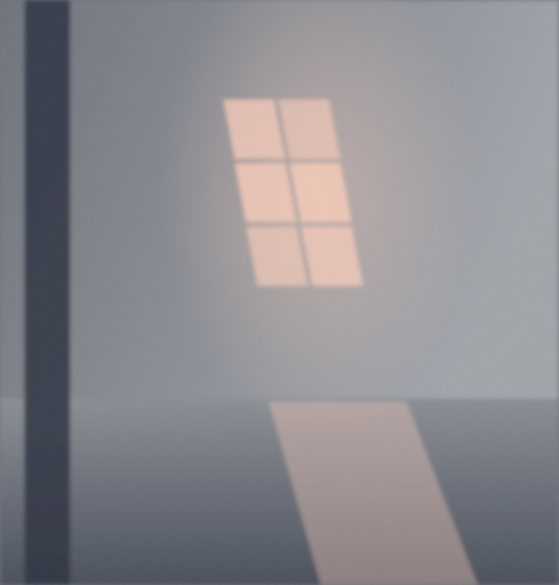
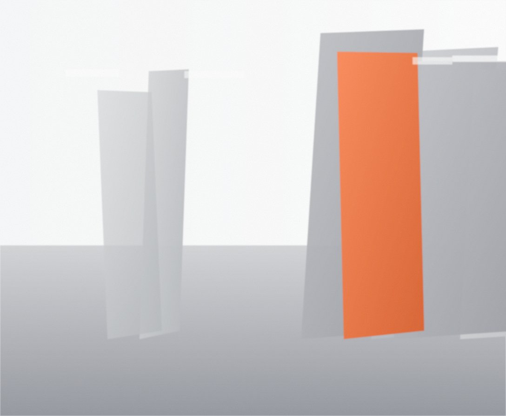

ZIFEIYU PPT SKILL
浏览器里直接演示，再一键导出可编辑 PPTX、矢量 PDF 与逐页 PNG。
12 种独立风格
16 条校验规则
网页 PPT · 可编辑导出 · 风格 F 柔和 · 产品

3 种
PPTX · PDF · PNG 一键导出
ZIFEIYU PPT SKILL
四个章节，从风格库一路走到交付工作流
01
十二种风格，开场先挑一种
第 4 页
02
先量后画，文字始终可编辑
第 7 页
03
十六条规则，错误清零才交付
第 10 页
04
从大纲到成稿的四步
第 13 页
2
设计原则
— SKILL.md · 设计原则
3
第 1 部分
01
十二种风格，开场先挑一种
本章位置
01
风格库
02
测量与导出
03
质量门
04
工作流
4
风格库
五组十二种独立版式体系，开场先定视觉语言
12
分五组：编辑排印、商务理性、舞台冲击、影像叙事、东方人文
A 杂志 · 暖纸
D 报刊 · 版面
B 瑞士 · 网格
F 柔和 · 产品
H 咨询 · 白皮书
L 工程制图
C 发布会 · 暗场
E 大字报 · 粗野
G 摄影集 · 画册
J 拼贴 · 手账
I 日式 · 极简
K 新中式 · 东方
来源：docs/superpowers/specs/2026-10-08-style-library-design.md §2
5
风格库
从共用一套版式，升级为按风格独立的版式体系
之前
三套设计系统共用 L01–L24，换一个主题文件整套换色，版面结构始终一样。
24
个版式，三套系统共用
现在
十二种风格各有一套版式，按角色登记；校验与导出只认角色，不认风格。
12
种风格，各有一套版式
来源：references/layouts.md（L01–L24）· 风格库 spec §1、§3.2
6
测量与导出
先由浏览器排布再逐项测量，让 HTML 与 PPTX 保持一致

图表 2 · 示意图
01
导出器先让浏览器把每一页排好，再逐个量出元素的位置、尺寸、字号与颜色，按同样的坐标写进 PPTX。
02
圆角、描边、阴影、旋转与竖排换成 PowerPoint 原生形状；画不出的装饰单独截图，文字始终可编辑。
导出原语：圆角矩形 · 直线 · 燕尾 · 旋转 · 阴影 · 竖排
来源：scripts/export-pptx.mjs、scripts/lib/snapshot.mjs
7
示意图
风格决定版面，版面决定一页能放多少字。
8
测量与导出
从演示体验到二次编辑与质量门，每项能力都可直接核验
01
方向键翻页，F 全屏，S 打开演讲者控制台，讲稿只给自己看。
02
文字是原生文本框，形状是原生形状，交给同事也能接着改。
03
十六条规则查版式、字号、出处与导出一致性，错误清零才交付。
来源：SKILL.md 第 6、8 步
9
质量门
十六条规则，错误清零才交付
16
R1–R16，从版式注册一路查到 PPTX 导出一致性
20
其中 12 个是每种风格必须覆盖的核心角色
3
PPTX · PDF · PNG，HTML 是唯一的源
来源：scripts/validate.mjs · scripts/lib/roles.mjs
10
质量门
各类规则的条数（条），按守护对象分组
对应规则编号
4
R3 · R4 · R7 · R9
4
R1 · R2 · R6 · R12
3
R5 · R8 · R14
3
R10 · R11 · R13
1
R15
1
R16
来源：scripts/validate.mjs 规则注释（R1–R16），按守护对象分组
11
质量门
画布、字体、校验与导出格式的核心约束一览
项目
规格
出处
1280 × 720 px，导出时 px × 0.75 换算为 pt
assets/base.css
16 px，溢出先删字、再换版式
validate.mjs · R4
R1–R16，错误清零才能交付
validate.mjs
PPTX · PDF · PNG，HTML 是唯一的源
SKILL.md
20 个，其中 12 个核心角色
lib/roles.mjs
SIL OFL 开源字体，按 deck 用字子集化
fetch-fonts.mjs
来源：表内「出处」列（本仓库文件）
12
工作流
先选风格，再写内容：风格决定版面，版面决定一页能放多少字
1
2
3
4
看风格画廊，按场合挑一种，整份 deck 只用这一种。
按内容形状找角色，复制版式骨架，只换文字和图片。
查类名、字号、出处与导出一致性，错误必须清零。
一键得到可编辑 PPTX、矢量 PDF 与逐页 PNG。
来源：SKILL.md 工作流
13
工作流
版本里程碑（2026 年）
07.16
锁定设计系统的网页 PPT，确定性导出。
07.18
第二套设计系统：思源宋、暖纸、朱砂。
08.17
规则覆盖全部元素，文字分段原生导出。
08.18
第三套设计系统，加入数据叙事版式。
10.08
十二种风格，版式独立。
来源：git log（2026-07-16 → 2026-10-08）
14
工作流
每次迭代先过风格自检与规则校验，再做渲染比对与基线记录
01
02
03
04
4
个步骤，一圈
01
02
03
04
→ 回到改版式
来源：scripts/baseline.mjs（基线前先过 check-style 与 validate）
15
工作流
底座、风格包与品牌色分层解耦，独立维护不相互覆盖
base.css
style.css
brand.css
外层
画布、元素契约、形状原语
中层
风格的 token、字体与全部版式
内层
只改 token 的品牌色
来源：风格库 spec §3.1
16
下一步
新建 DECK
node scripts/new-deck.mjs my-deck --style soft
风格画廊：docs/styles/index.html
ZIFEIYU PPT SKILL · 风格 F 柔和 · 产品
2026 年 10 月